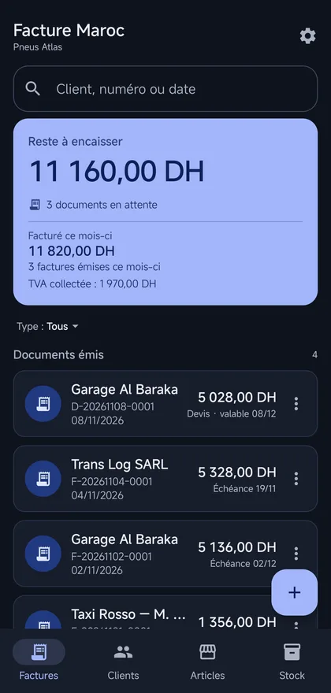
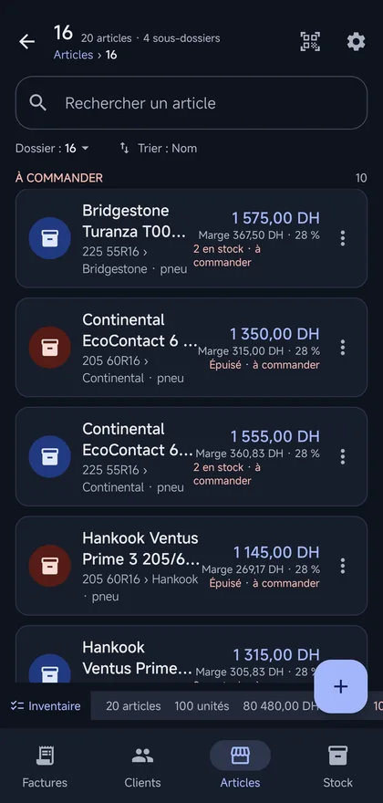
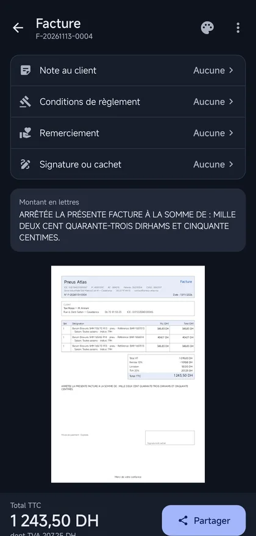

Facturez sans Internet, et aidez-nous à sortir l’application Android.
Facture Maroc hors ligne est l’application Android : le catalogue, les clients et les factures vivent sur le téléphone, sans compte et sans connexion. Google Play demande 12 testeurs inscrits pendant 14 jours avant d’ouvrir la publication : c’est la seule étape qui reste.
- 12 testeurs
- 14 jours
- 5 minutes
- Gratuit



-
Rejoignez le groupe de testeurs
Le groupe Google sert uniquement à vous ouvrir l’accès au test. Ouvrez-le et cliquez sur « Rejoindre le groupe ». Utilisez de préférence le compte Google de votre téléphone.
Rejoindre le groupe -
Inscrivez-vous au test
Sur la page du test, avec le même compte Google, cliquez sur « Devenir testeur ». Google confirme votre inscription et autorise l’installation de l’application sur votre compte.
S’inscrire au test -
Installez depuis Google Play
L’application apparaît alors dans le Play Store, comme n’importe quelle autre. Il peut s’écouler quelques minutes entre l’inscription et l’ouverture du lien : c’est normal.
 Le lien s’active dès que Google a validé la
version de test.
Le lien s’active dès que Google a validé la
version de test.
Pourquoi une application séparée ?
La version web, FactureApp, facture depuis un navigateur et archive les PDF en ligne. L’application Android, elle, fonctionne hors ligne : un atelier, une boutique sans réseau ou un commercial en tournée peuvent facturer sans dépendre d’une connexion. Les deux partagent le même moteur de facture et les mêmes mentions marocaines, mais aucun compte n’est nécessaire côté Android, et les données ne quittent pas le téléphone.
À savoir avant de commencer
- Utilisez le même compte Google sur le téléphone et dans le navigateur, sinon le Play Store ne proposera pas l’installation.
- Android 8.0 ou plus récent.
- Après l’inscription, comptez de quelques minutes à quelques heures avant que le lien du Play Store ne fonctionne.
- Si vous avez déjà installé un fichier APK à la main, désinstallez-le d’abord : la version Play est signée différemment et refusera de s’installer par-dessus.
- Vos factures restent sur votre téléphone. Le groupe ne reçoit aucune donnée et ne sert qu’à distribuer la version de test.
- Aucune contrepartie n’est demandée : tester suffit. Un message pour dire ce qui bloque ou ce qui manque nous aide beaucoup.
Quitter le test
Play Store → fiche de l’application → « Quitter le programme ». L’application reste installée et vos données restent sur le téléphone ; vous ne recevez simplement plus les mises à jour de test.
Une étape ne fonctionne pas ?
Écrivez à contact@factureapp.ma en précisant votre modèle de téléphone et l’étape qui bloque.